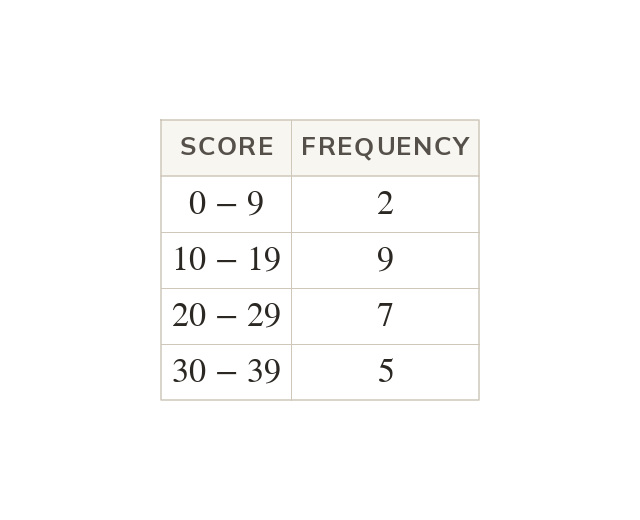
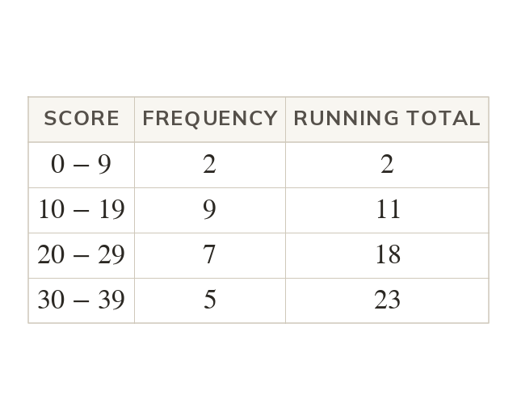
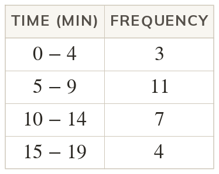
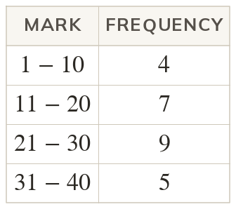
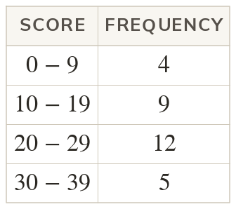
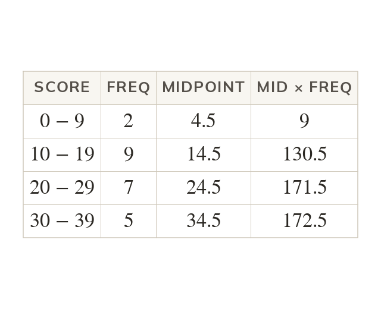
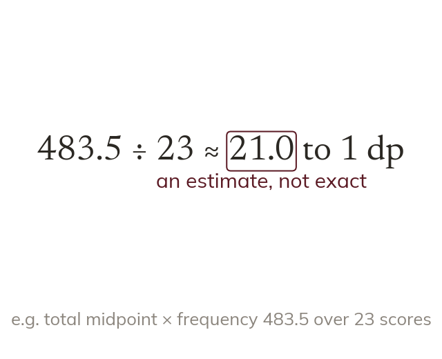
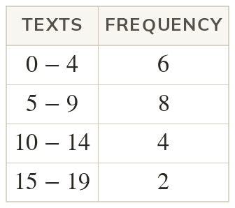
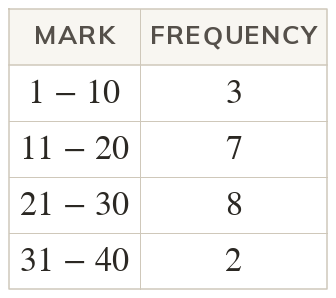
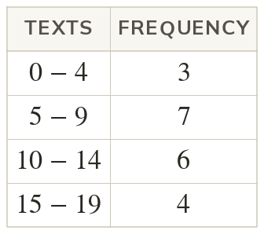

Grouping loses the values
Once data is grouped, only the class each value fell into is known. So the averages become classes, or an estimate.
A table of marks in groups of ten hides every individual mark, yet we still want to know the typical one. Today we get as close as grouped data allows, and say honestly how close that is.
Work down the page at your own pace. Write every answer in your book first, then click to check it.
Read each card, then follow the worked examples one step at a time.

Once data is grouped, only the class each value fell into is known. So the averages become classes, or an estimate.

The modal class has the highest frequency. The median lies in the class holding the value. Counting down, the 12th score is in


Pick an answer. If it's wrong, the feedback tells you which mistake it was.

Read each card, then follow the worked examples one step at a time.

Each class midpoint stands in for every value in it. For it is
Midpoint × frequency estimates each class's total.

The estimated mean is the total of midpoint × frequency divided by the total frequency. It is an estimate, because the true values in each class are unknown.


Pick an answer. If it's wrong, the feedback tells you which mistake it was.

Finished? Next lesson: 8.17.4 Grouped Continuous Data.
Log in, then search for a code to practise that skill.
Videos, worksheets and more on each part of this lesson.